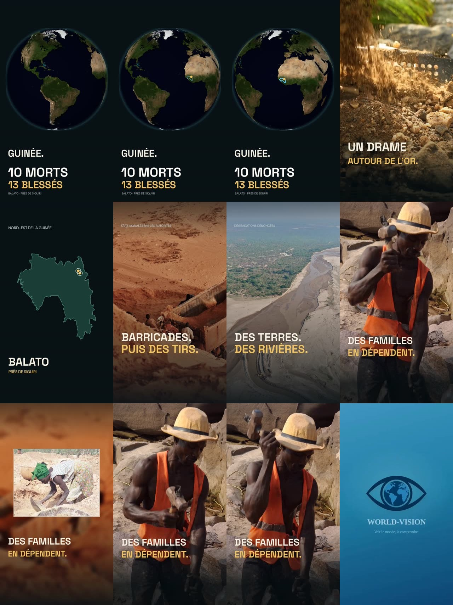

10 morts. 13 blessés.
L’orpaillage tourne au drame en Guinée.
Balato, près de Siguiri · Guinée · Événements du 11 novembre 2026. Script choisi verrouillé, nouvelle prise continue Vivienne, sans assemblage de fragments et cartes géographiques réelles.

Signature de fin : logo bleu issu de la vidéo envoyée par le propriétaire ; composition réanimée à partir d’une image extraite du clip original. Comparer les trois prises Vivienne.
Ce qui change par rapport à notre précédente vidéo
Le récit est celui que tu as choisi, sans aucune réécriture. La narration est ralentie et séquencée autour des deux chiffres d'ouverture, des cinq victimes étrangères et de la question finale. Les images sont réparties autour du sens de chaque phrase. Deux séquences en mouvement réel de travail minier remplacent les plans les plus génériques ; leur rôle est illustratif et leur provenance est documentée.

À savoir sur les images
Le globe montre la Guinée et les localités de Balato et de Siguiri à partir de données NASA et Natural Earth. Les photographies historiques de Siguiri provenant de l'USAID sont des archives. Les deux vidéos de gestes miniers, ainsi que les images d'extraction et de rivière, sont des illustrations documentaires sous licence Pexels, **pas des images tournées à Balato ni des affrontements de novembre 2026**. Aucun reportage vidéo TV5MONDE, Reuters, AP ou DW n'est reproduit sans autorisation.
Sources de l'actualité
Communiqué officiel guinéen · Reuters · Associated Press
Technique et qualité
Script validé contrôlé par SHA-256, doublage mesuré en mots par minute, pas d'accélération audio artificielle, seuil maximal de durée des plans fixes, douze photogrammes et passage obligatoire d'un validateur réutilisable pour les futures actualités.
Voix et validation
La voix française Vivienne reste une voix candidate de relecture et nous n'avons pas encore établi les droits de publication commerciale. Il faudra écouter le naturel de chaque passage et utiliser une solution vocale dotée des droits adaptés avant publication commerciale.
Version de travail, non automatiquement autorisée à la diffusion. Une validation artistique ne résulte pas de la seule réussite des contrôles techniques.